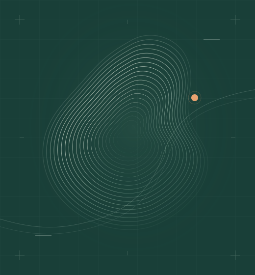

EZRA / XUANWUJI
Be water.
在计算与生命之间，
保持好奇，持续探索。
你好，我是 EZRA。这里收录我的公开项目：从生物数据的表征学习，到分子相互作用预测与结构可视化。

01 — ABOUT
关于我
从数据出发，
让复杂的生命问题变得可探索。
我的公开项目围绕生物数据与计算方法展开，涉及空间转录组、肽与 HLA 的结合预测，以及蛋白结构的几何表达。代码、方法说明与使用方式都可以在对应的 GitHub 仓库中找到。
表征学习分子相互作用科学可视化
02 — SELECTED WORK
公开项目
从表征、预测，到看见结构。
01
SPATIAL TRANSCRIPTOMICS
SpatialCL
利用对比学习，为空间转录组数据中的空间位点学习表征。
02
MOLECULAR INTERACTIONS
pHLAformer
结合 Transformer 与交叉注意力，对肽–HLA 结合特异性及亲和力进行预测。
03
STRUCTURAL VISUALIZATION
pdb2voronoi
将蛋白质 PDB 结构转换为 Voronoi 图，用几何分区呈现结构信息。
03 — CONNECT
让想法，
继续流动。
欢迎交流项目、代码与新的想法。
从 GitHub 开始认识彼此。